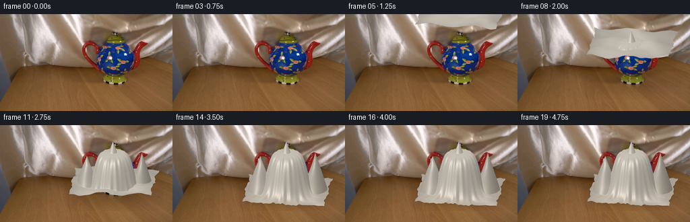
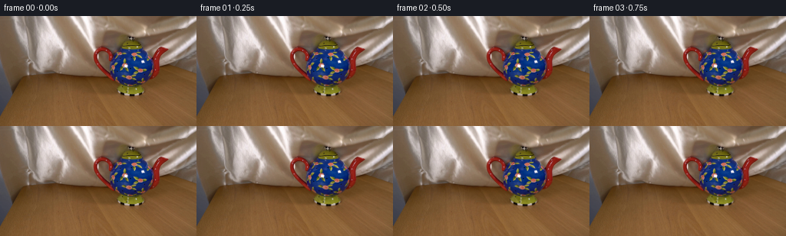
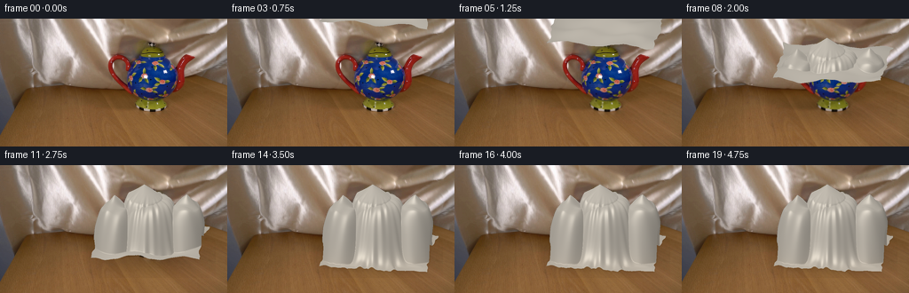
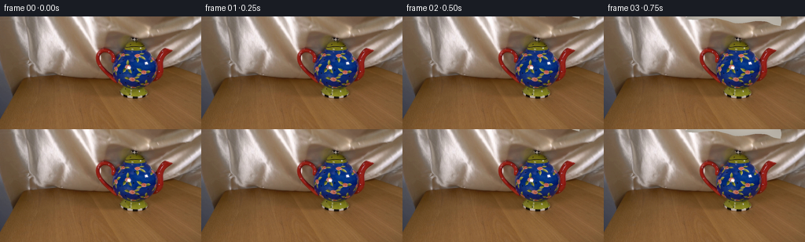

CODING AGENTS AS PIXEL WORLD MODELS
traex/GPT-6.1-Sol · 0157
点击播放 · 原生 RGB 像素
逐轮保存的候选
回放视频、检查图与代码变化。
每份候选均可单独播放。实际图片检查记录在下方工具轨迹中。
候选 01播放与检查图
点击播放 · 原生 RGB 像素

展开代码变化
--- 上一保存版本
+++ 本次保存版本
@@ -0,0 +1,155 @@
+from pathlib import Path
+import numpy as np
+from PIL import Image
+from scipy.ndimage import gaussian_filter, map_coordinates
+import artifact_io
+
+ROOT=Path(__file__).resolve().parent
+BASE=np.asarray(Image.open(ROOT/'first_frame.png').convert('RGB')).copy()
+S=3
+H,W=144*S,256*S
+# An orthographic camera, in the same locked position as the photograph.
+xx=(np.arange(W)+.5)/S
+zz=np.linspace(1.12,-1.12,650)
+GX=np.broadcast_to(((xx-170)/60)[None,:],(len(zz),W))
+GZ=np.broadcast_to(zz[:,None],GX.shape)
+
+# Satin's very low-amplitude, longitudinal material variation is sampled from
+# the neutral silk highlights already present in the supplied photograph.
+patch=BASE[2:62,45:91].astype(float)
+tex=gaussian_filter(patch.mean(axis=2),1.3)
+tex=(tex-tex.mean())/(tex.std()+1e-6)
+
+
+def smoothstep(a,b,x):
+ p=np.clip((x-a)/(b-a),0,1)
+ return p*p*(3-2*p)
+
+
+def cloth_surface(t):
+ fall=smoothstep(0,3.45,t)
+ # Real-time descent, followed by contact and damped settling.
+ free=1.53*(1-fall)-.012
+ settle=smoothstep(2.6,3.65,t)
+ dx=.025*np.sin(t*1.65)*(1-settle)
+ x=GX-dx
+ z=GZ
+ theta=.13+.035*np.sin(t*1.3)*(1-settle)
+ u=x*np.cos(theta)+z*np.sin(theta)
+ v=-x*np.sin(theta)+z*np.cos(theta)
+ r=np.sqrt(x*x+(z*1.1)**2)
+ # Smooth support envelope of the lid, bulbous body, handle and spout.
+ body=.608/(1+np.exp(np.clip((r-.505)*15,-50,50)))
+ lid=.777-1.66*np.sqrt((x+.017)**2+(z*1.15)**2)
+ left=.575-1.8*np.sqrt((x+.66)**2+((z+.005)*1.1)**2)
+ right=.593-2.0*np.sqrt((x-.70)**2+((z+.045)*1.1)**2)
+ # The loose cloth spans rather than reproduces the handle's hole.
+ skirt=.48-1.0*np.sqrt(x*x+(z*.93)**2)
+ support=np.maximum.reduce([body,lid,left,right,skirt,np.zeros_like(x)])
+ contact=smoothstep(.96,.46,free) if False else smoothstep(1.0,.3,free)
+ # Travelling waves die out on contact. Persistent, radial satin pleats
+ # grow where cloth hangs below its supports.
+ angle=np.arctan2(z+.035,x+.018)
+ foldphase=angle*16.0+r*8.5
+ pleats=(.016*np.sin(foldphase)+.010*np.sin(angle*25-r*4.3))
+ pleats*=smoothstep(.14,.62,r)
+ pleats*=.45+.55*smoothstep(.84,.40,free)
+ billow=(.023*np.sin(5.7*x+4.1*z+t*2.5)+.014*np.sin(10*z-3*x-t*2.0))
+ billow*=1-settle
+ # Contact remains pinned, while the hanging skirt continues downwards.
+ suspended=free+.018*x+.018*z+billow
+ height=np.maximum(suspended,support+pleats)
+ height=np.maximum(height, .006+.006*np.sin(u*22+v*15)**2)
+ # Fine flutter during the final release, without moving the object.
+ release=max(t-3.0,0)
+ height+=.009*np.exp(-release*2.5)*np.sin(release*9+r*9)*settle*smoothstep(.4,.9,r)
+ edge_u=1.015+.025*np.sin(v*8+1.3)+.010*np.sin(v*24)
+ edge_v=.746+.021*np.sin(u*8-.3)+.010*np.sin(u*23+.4)
+ domain=(np.abs(u)<edge_u)&(np.abs(v)<edge_v)
+ # A small corner curls up as it lands.
+ curl=.019*np.exp(-((u-.93)/.15)**2-((v-.64)/.17)**2)*settle
+ height+=curl
+ return x,z,u,v,height,domain
+
+
+def render(t):
+ x,z,u,v,height,domain=cloth_surface(t)
+ # Surface normals and local anisotropic illumination of satin.
+ dz=zz[1]-zz[0]
+ dhz,dhx=np.gradient(height,dz,1/(60*S))
+ n=np.stack([-dhx,np.ones_like(height),-dhz],axis=2)
+ n/=np.linalg.norm(n,axis=2,keepdims=True)
+ light=np.array([-.43,.81,.40]); light/=np.linalg.norm(light)
+ view=np.array([0,.29,.957]); view/=np.linalg.norm(view)
+ half=light+view;half/=np.linalg.norm(half)
+ diffuse=np.clip(n@light,0,1)
+ spec=np.clip(n@half,0,1)**28
+ # A second broad reflection keeps the unlit folds detailed.
+ fill=np.clip(n@np.array([.50,.72,-.46]),0,1)
+ tx=(u+.99)*20.0+2.4*np.sin(v*2.5)
+ ty=(v+.85)*26.0+3*np.sin(u*2.0)
+ texture=map_coordinates(tex,[np.mod(ty,tex.shape[0]-1),np.mod(tx,tex.shape[1]-1)],order=1,mode='reflect')
+ weave=.003*np.sin(u*540)*np.sin(v*540)
+ illumination=.56+.32*diffuse+.09*fill+.25*spec+.048*texture+weave
+ color=np.array([204.,197.,185.])[None,None,:]*illumination[:,:,None]
+ # Subtle warmer reflected light near the wooden table.
+ warm=np.exp(-height*8)
+ color+=warm[:,:,None]*np.array([4.,1.,-2.])
+ color=np.clip(color,0,255)
+ proj=98+z*28-height*95
+ # Ray/height-field intersection: the front-most crossing is chosen for
+ # each pixel. This supplies correct self-occlusion without a renderer.
+ sy=(np.arange(H)+.5)/S
+ canvas=np.zeros((H,W,3),float)
+ alpha=np.zeros((H,W),float)
+ depth=np.zeros((H,W),float)
+ valid=domain[:-1]&domain[1:]
+ y0,y1=proj[:-1],proj[1:]
+ lo=np.minimum(y0,y1); hi=np.maximum(y0,y1)
+ cols=np.arange(W)
+ for row,y in enumerate(sy):
+ cross=(lo<=y)&(hi>=y)&valid
+ anyhit=np.any(cross,axis=0)
+ j=np.argmax(cross,axis=0)
+ py0=y0[j,cols];py1=y1[j,cols]
+ q=np.divide(y-py0,py1-py0,out=np.zeros(W),where=np.abs(py1-py0)>1e-8)
+ q=np.clip(q,0,1)
+ c0=color[j,cols];c1=color[j+1,cols]
+ canvas[row]=(c0*(1-q[:,None])+c1*q[:,None])
+ alpha[row]=anyhit
+ depth[row]=zz[j]*(1-q)+zz[j+1]*q
+ # Shadow directly below the descending textile, becoming smaller and
+ # darker as it reaches the table; the photograph itself remains fixed.
+ basehi=np.asarray(Image.fromarray(BASE).resize((W,H),Image.Resampling.BICUBIC)).astype(float)
+ table_y=(np.arange(H)[:,None]+.5)/S
+ screen_x=(np.arange(W)[None,:]+.5)/S
+ late=smoothstep(.75,2.8,t)
+ table_shadow=np.exp(-((screen_x-170)/65)**4-((table_y-103)/18)**2)*.16*late
+ table_shadow*=smoothstep(82,98,table_y)
+ basehi*=1-table_shadow[:,:,None]
+ # The cloth's front hem casts a narrow soft contact shadow.
+ projected=gaussian_filter(alpha,(2.0*S,1.3*S))
+ contactshade=np.clip(projected-alpha,0,1)*.14*smoothstep(2.0,3.5,t)
+ basehi*=1-contactshade[:,:,None]
+ out=basehi*(1-alpha[:,:,None])+canvas*alpha[:,:,None]
+ out=np.clip(out,0,255).astype(np.uint8)
+ return np.asarray(Image.fromarray(out).resize((256,144),Image.Resampling.LANCZOS)),alpha
+
+
+def main():
+ frames=[BASE.copy()]
+ for i in range(1,20):
+ frame,mask=render(i/4)
+ # Only altered pixels belong to the cloth and its local soft shadow.
+ # Outside those regions, retain the exact original RGB samples.
+ sm=np.asarray(Image.fromarray((mask*255).astype(np.uint8)).resize((256,144),Image.Resampling.LANCZOS)).astype(float)/255
+ yy,xx=np.mgrid[:144,:256]
+ shadowzone=(xx>96)&(xx<243)&(yy>78)&(yy<127)
+ affected=(sm>0)|shadowzone
+ frame=np.where(affected[:,:,None],frame,BASE).astype(np.uint8)
+ frames.append(frame)
+ arr=np.stack(frames).astype(np.uint8)
+ artifact_io.save(arr,ROOT)
+ np.save(ROOT/'.tmp/generated_rgb.npy',arr)
+
+if __name__=='__main__':main()
候选 02播放与检查图
点击播放 · 原生 RGB 像素


展开代码变化
--- 上一保存版本
+++ 本次保存版本
@@ -29,7 +29,7 @@
def cloth_surface(t):
fall=smoothstep(0,3.45,t)
# Real-time descent, followed by contact and damped settling.
- free=1.53*(1-fall)-.012
+ free=1.35*(1-fall)-.012
settle=smoothstep(2.6,3.65,t)
dx=.025*np.sin(t*1.65)*(1-settle)
x=GX-dx
@@ -39,14 +39,16 @@
v=-x*np.sin(theta)+z*np.cos(theta)
r=np.sqrt(x*x+(z*1.1)**2)
# Smooth support envelope of the lid, bulbous body, handle and spout.
- body=.608/(1+np.exp(np.clip((r-.505)*15,-50,50)))
- lid=.777-1.66*np.sqrt((x+.017)**2+(z*1.15)**2)
- left=.575-1.8*np.sqrt((x+.66)**2+((z+.005)*1.1)**2)
- right=.593-2.0*np.sqrt((x-.70)**2+((z+.045)*1.1)**2)
+ body=.648/(1+np.exp(np.clip((r-.57)*15,-50,50)))
+ lid=.825-.46*np.sqrt((x+.10)**2+(z*1.15)**2)
+ lid-=.64*smoothstep(.32,.68,np.sqrt((x+.10)**2+(z*1.15)**2))
+ left=.710-.56*np.sqrt((x+.66)**2+((z+.005)*1.1)**2)
+ left-=.58*smoothstep(.23,.61,np.sqrt((x+.66)**2+((z+.005)*1.1)**2))
+ right=.712-.56*np.sqrt((x-.70)**2+((z+.045)*1.1)**2)
+ right-=.58*smoothstep(.23,.61,np.sqrt((x-.70)**2+((z+.045)*1.1)**2))
# The loose cloth spans rather than reproduces the handle's hole.
skirt=.48-1.0*np.sqrt(x*x+(z*.93)**2)
support=np.maximum.reduce([body,lid,left,right,skirt,np.zeros_like(x)])
- contact=smoothstep(.96,.46,free) if False else smoothstep(1.0,.3,free)
# Travelling waves die out on contact. Persistent, radial satin pleats
# grow where cloth hangs below its supports.
angle=np.arctan2(z+.035,x+.018)
候选 03播放与检查图
候选 04播放与检查图
点击播放 · 原生 RGB 像素


展开代码变化
--- 上一保存版本
+++ 本次保存版本
@@ -40,12 +40,12 @@
r=np.sqrt(x*x+(z*1.1)**2)
# Smooth support envelope of the lid, bulbous body, handle and spout.
body=.648/(1+np.exp(np.clip((r-.57)*15,-50,50)))
- lid=.825-.46*np.sqrt((x+.10)**2+(z*1.15)**2)
+ lid=.805-.46*np.sqrt((x+.10)**2+(z*1.15)**2)
lid-=.64*smoothstep(.32,.68,np.sqrt((x+.10)**2+(z*1.15)**2))
- left=.710-.56*np.sqrt((x+.66)**2+((z+.005)*1.1)**2)
- left-=.58*smoothstep(.23,.61,np.sqrt((x+.66)**2+((z+.005)*1.1)**2))
- right=.712-.56*np.sqrt((x-.70)**2+((z+.045)*1.1)**2)
- right-=.58*smoothstep(.23,.61,np.sqrt((x-.70)**2+((z+.045)*1.1)**2))
+ left=.690-.56*np.sqrt((x+.66)**2+((z-.11)*1.1)**2)
+ left-=.58*smoothstep(.23,.61,np.sqrt((x+.66)**2+((z-.11)*1.1)**2))
+ right=.697-.56*np.sqrt((x-.70)**2+((z-.10)*1.1)**2)
+ right-=.58*smoothstep(.23,.61,np.sqrt((x-.70)**2+((z-.10)*1.1)**2))
# The loose cloth spans rather than reproduces the handle's hole.
skirt=.48-1.0*np.sqrt(x*x+(z*.93)**2)
support=np.maximum.reduce([body,lid,left,right,skirt,np.zeros_like(x)])
@@ -92,7 +92,7 @@
ty=(v+.85)*26.0+3*np.sin(u*2.0)
texture=map_coordinates(tex,[np.mod(ty,tex.shape[0]-1),np.mod(tx,tex.shape[1]-1)],order=1,mode='reflect')
weave=.003*np.sin(u*540)*np.sin(v*540)
- illumination=.56+.32*diffuse+.09*fill+.25*spec+.048*texture+weave
+ illumination=.56+.32*diffuse+.09*fill+.25*spec+.022*texture+weave
color=np.array([204.,197.,185.])[None,None,:]*illumination[:,:,None]
# Subtle warmer reflected light near the wooden table.
warm=np.exp(-height*8)
@@ -146,7 +146,7 @@
# Outside those regions, retain the exact original RGB samples.
sm=np.asarray(Image.fromarray((mask*255).astype(np.uint8)).resize((256,144),Image.Resampling.LANCZOS)).astype(float)/255
yy,xx=np.mgrid[:144,:256]
- shadowzone=(xx>96)&(xx<243)&(yy>78)&(yy<127)
+ shadowzone=(xx>96)&(xx<243)&(yy>78)&(yy<127)&(i/4>.75)
affected=(sm>0)|shadowzone
frame=np.where(affected[:,:,None],frame,BASE).astype(np.uint8)
frames.append(frame)
可观测工具轨迹
实际执行的命令与返回图片。
命令 1exit 0
/bin/bash -lc 'ls -la && cat prompt.txt && cat GENERATION_RULES.md'
命令 2exit 0
/bin/bash -lc "cat artifact_io.py && python - <<'PY'
from PIL import Image
import numpy as np
im=np.array(Image.open('first_frame.png').convert('RGB'))
print(im.shape)
# RGB downsample
from PIL import Image
x=np.array(Image.fromarray(im).resize((64,36)))
for row in x:
print(' '.join('%02x%02x%02x'%tuple(p) for p in row))
PY"命令 3exit 0
/bin/bash -lc "python - <<'PY'
import numpy as np
from PIL import Image
im=np.array(Image.open('first_frame.png')).astype(float)
# numeric color-class grid 128x72
im=np.array(Image.fromarray(im.astype('uint8')).resize((128,72))).astype(float)
r,g,b=im.transpose(2,0,1)
c=np.full(r.shape,'.',dtype='<U1')
c[(r>g*1.23)&(g>b*1.15)]='w'
c[(r>g*1.8)&(r>b*1.7)]='R'
c[(b>r*1.22)&(b>g*1.15)]='B'
c[(r>150)&(g>140)&(b>130)]='L'
c[(g>r*.84)&(g>b*1.35)]='Y'
c[(np.max(im,2)-np.min(im,2)<16)&(r<100)]='s'
for y,row in enumerate(c): print('%03d '%(y*2)+''.join(row))
PY"命令 4exit 0
/bin/bash -lc "python - <<'PY'
from PIL import Image
import numpy as np
im=np.array(Image.open('first_frame.png').convert('RGB'))
# luminance ascii
x=np.array(Image.fromarray(im).resize((128,72)))
g=x.mean(2)
ch=np.array(list(' .:-=+*#%@'))
for y,row in enumerate(g):print('%03d '%(y*2)+''.join(ch[np.clip((row/256*10).astype(int),0,9)]))
# Column cross sections
print('Profiles')
for y in [0,20,40,60,70,80,100]:
print(y,' '.join(f'{xx}:{tuple(im[y,xx])}' for xx in range(0,256,8)))
PY"命令 5exit 0
/bin/bash -lc "python - <<'PY'
import numpy as np
from PIL import Image
im=np.array(Image.open('first_frame.png')).astype(float)
for y in range(0,114,3):
row=im[y]
# output RGB classifications twice res in central object
s=''
for x in range(112,222):
r,g,b=row[x]
c=' '
if b>g*1.13 and b>r*1.12:c='B'
elif r>g*1.65 and r>b*1.5:c='R'
elif g>r*.82 and g>b*1.6:c='G'
elif b/g>.72 and r>g:c='c'
elif r>g*1.3 and b/g<.7:c='w'
else:c='.'
s+=c
print('%03d '%y+s)
PY"命令 6exit 0
/bin/bash -lc "python - <<'PY'
from PIL import Image
import numpy as np
im=np.array(Image.open('first_frame.png'))
# print 3x3 averages in upper and side cloth places
for y in [5,15,30,45,60,70,75,80]:
print('row',y)
print(' '.join(f'{x}:{np.round(im[max(0,y-1):y+2,x-1:x+2].mean((0,1))).astype(int).tolist()}' for x in range(10,255,10)))
PY"命令 7exit 0
/bin/bash -lc "python - <<'PY'
import numpy as np
from PIL import Image
im=np.array(Image.open('first_frame.png'))
# gradients
for x in [5,10,15,20,30,40,50,70,90,110,120,130,210,220,230,240,250]:
a=im[:,x,:].astype(float); d=np.linalg.norm(a[1:]-a[:-1],axis=1)
print(x, ' '.join(f'{y}:{np.round(a[y]).astype(int).tolist()}' for y in range(55,91,5)), 'edges',[(int(k),round(d[k],1)) for k in np.argsort(d[50:100])[-5:]+50])
PY"命令 8exit 0
/bin/bash -lc "python - <<'PY' import importlib.util for m in ['numpy','PIL','scipy','cv2','numba']: print(m,bool(importlib.util.find_spec(m))) PY"
命令 9exit 0
/bin/bash -lc "mkdir -p .tmp && cat > .tmp/probe.py <<'PY'
import numpy as np,cv2
from PIL import Image
im=np.array(Image.open('first_frame.png').convert('RGB'))
# mask pixels table vs neutral
for y in range(0,81,4):
row=im[y].astype(float)
cond=(row[:,2]/(row[:,1]+1)>.73)&(row[:,0]-row[:,1]<25)
seg=[];on=False
for x in range(256):
if cond[x] and not on: start=x;on=True
if on and (not cond[x] or x==255):
end=x if cond[x] else x-1
if end-start>=3:seg.append((start,end))
on=False
print(y,seg)
PY
python .tmp/probe.py"命令 10exit 0
/bin/bash -lc "cat > generate.py <<'PY'
from pathlib import Path
import numpy as np
from PIL import Image
from scipy.ndimage import gaussian_filter, map_coordinates
import artifact_io
ROOT=Path(__file__).resolve().parent
BASE=np.asarray(Image.open(ROOT/'first_frame.png').convert('RGB')).copy()
S=3
H,W=144*S,256*S
# An orthographic camera, in the same locked position as the photograph.
xx=(np.arange(W)+.5)/S
zz=np.linspace(1.12,-1.12,650)
GX=np.broadcast_to(((xx-170)/60)[None,:],(len(zz),W))
GZ=np.broadcast_to(zz[:,None],GX.shape)
# Satin's very low-amplitude, longitudinal material variation is sampled from
# the neutral silk highlights already present in the supplied photograph.
patch=BASE[2:62,45:91].astype(float)
tex=gaussian_filter(patch.mean(axis=2),1.3)
tex=(tex-tex.mean())/(tex.std()+1e-6)
def smoothstep(a,b,x):
p=np.clip((x-a)/(b-a),0,1)
return p*p*(3-2*p)
def cloth_surface(t):
fall=smoothstep(0,3.45,t)
# Real-time descent, followed by contact and damped settling.
free=1.53*(1-fall)-.012
settle=smoothstep(2.6,3.65,t)
dx=.025*np.sin(t*1.65)*(1-settle)
x=GX-dx
z=GZ
theta=.13+.035*np.sin(t*1.3)*(1-settle)
u=x*np.cos(theta)+z*np.sin(theta)
v=-x*np.sin(theta)+z*np.cos(theta)
r=np.sqrt(x*x+(z*1.1)**2)
# Smooth support envelope of the lid, bulbous body, handle and spout.
body=.608/(1+np.exp(np.clip((r-.505)*15,-50,50)))
lid=.777-1.66*np.sqrt((x+.017)**2+(z*1.15)**2)
left=.575-1.8*np.sqrt((x+.66)**2+((z+.005)*1.1)**2)
right=.593-2.0*np.sqrt((x-.70)**2+((z+.045)*1.1)**2)
# The loose cloth spans rather than reproduces the handle's hole.
skirt=.48-1.0*np.sqrt(x*x+(z*.93)**2)
support=np.maximum.reduce([body,lid,left,right,skirt,np.zeros_like(x)])
contact=smoothstep(.96,.46,free) if False else smoothstep(1.0,.3,free)
# Travelling waves die out on contact. Persistent, radial satin pleats
# grow where cloth hangs below its supports.
angle=np.arctan2(z+.035,x+.018)
foldphase=angle*16.0+r*8.5
pleats=(.016*np.sin(foldphase)+.010*np.sin(angle*25-r*4.3))
pleats*=smoothstep(.14,.62,r)
pleats*=.45+.55*smoothstep(.84,.40,free)
billow=(.023*np.sin(5.7*x+4.1*z+t*2.5)+.014*np.sin(10*z-3*x-t*2.0))
billow*=1-settle
# Contact remains pinned, while the hanging skirt continues downwards.
suspended=free+.018*x+.018*z+billow
height=np.maximum(suspended,support+pleats)
height=np.maximum(height, .006+.006*np.sin(u*22+v*15)**2)
# Fine flutter during the final release, without moving the object.
release=max(t-3.0,0)
height+=.009*np.exp(-release*2.5)*np.sin(release*9+r*9)*settle*smoothstep(.4,.9,r)
edge_u=1.015+.025*np.sin(v*8+1.3)+.010*np.sin(v*24)
edge_v=.746+.021*np.sin(u*8-.3)+.010*np.sin(u*23+.4)
domain=(np.abs(u)<edge_u)&(np.abs(v)<edge_v)
# A small corner curls up as it lands.
curl=.019*np.exp(-((u-.93)/.15)**2-((v-.64)/.17)**2)*settle
height+=curl
return x,z,u,v,height,domain
def render(t):
x,z,u,v,height,domain=cloth_surface(t)
# Surface normals and local anisotropic illumination of satin.
dz=zz[1]-zz[0]
dhz,dhx=np.gradient(height,dz,1/(60*S))
n=np.stack([-dhx,np.ones_like(height),-dhz],axis=2)
n/=np.linalg.norm(n,axis=2,keepdims=True)
light=np.array([-.43,.81,.40]); light/=np.linalg.norm(light)
view=np.array([0,.29,.957]); view/=np.linalg.norm(view)
half=light+view;half/=np.linalg.norm(half)
diffuse=np.clip(n@light,0,1)
spec=np.clip(n@half,0,1)**28
# A second broad reflection keeps the unlit folds detailed.
fill=np.clip(n@np.array([.50,.72,-.46]),0,1)
tx=(u+.99)*20.0+2.4*np.sin(v*2.5)
ty=(v+.85)*26.0+3*np.sin(u*2.0)
texture=map_coordinates(tex,[np.mod(ty,tex.shape[0]-1),np.mod(tx,tex.shape[1]-1)],order=1,mode='reflect')
weave=.003*np.sin(u*540)*np.sin(v*540)
illumination=.56+.32*diffuse+.09*fill+.25*spec+.048*texture+weave
color=np.array([204.,197.,185.])[None,None,:]*illumination[:,:,None]
# Subtle warmer reflected light near the wooden table.
warm=np.exp(-height*8)
color+=warm[:,:,None]*np.array([4.,1.,-2.])
color=np.clip(color,0,255)
proj=98+z*28-height*95
# Ray/height-field intersection: the front-most crossing is chosen for
# each pixel. This supplies correct self-occlusion without a renderer.
sy=(np.arange(H)+.5)/S
canvas=np.zeros((H,W,3),float)
alpha=np.zeros((H,W),float)
depth=np.zeros((H,W),float)
valid=domain[:-1]&domain[1:]
y0,y1=proj[:-1],proj[1:]
lo=np.minimum(y0,y1); hi=np.maximum(y0,y1)
cols=np.arange(W)
for row,y in enumerate(sy):
cross=(lo<=y)&(hi>=y)&valid
anyhit=np.any(cross,axis=0)
j=np.argmax(cross,axis=0)
py0=y0[j,cols];py1=y1[j,cols]
q=np.divide(y-py0,py1-py0,out=np.zeros(W),where=np.abs(py1-py0)>1e-8)
q=np.clip(q,0,1)
c0=color[j,cols];c1=color[j+1,cols]
canvas[row]=(c0*(1-q[:,None])+c1*q[:,None])
alpha[row]=anyhit
depth[row]=zz[j]*(1-q)+zz[j+1]*q
# Shadow directly below the descending textile, becoming smaller and
# darker as it reaches the table; the photograph itself remains fixed.
basehi=np.asarray(Image.fromarray(BASE).resize((W,H),Image.Resampling.BICUBIC)).astype(float)
table_y=(np.arange(H)[:,None]+.5)/S
screen_x=(np.arange(W)[None,:]+.5)/S
late=smoothstep(.75,2.8,t)
table_shadow=np.exp(-((screen_x-170)/65)**4-((table_y-103)/18)**2)*.16*late
table_shadow*=smoothstep(82,98,table_y)
basehi*=1-table_shadow[:,:,None]
# The cloth's front hem casts a narrow soft contact shadow.
projected=gaussian_filter(alpha,(2.0*S,1.3*S))
contactshade=np.clip(projected-alpha,0,1)*.14*smoothstep(2.0,3.5,t)
basehi*=1-contactshade[:,:,None]
out=basehi*(1-alpha[:,:,None])+canvas*alpha[:,:,None]
out=np.clip(out,0,255).astype(np.uint8)
return np.asarray(Image.fromarray(out).resize((256,144),Image.Resampling.LANCZOS)),alpha
def main():
frames=[BASE.copy()]
for i in range(1,20):
frame,mask=render(i/4)
# Only altered pixels belong to the cloth and its local soft shadow.
# Outside those regions, retain the exact original RGB samples.
sm=np.asarray(Image.fromarray((mask*255).astype(np.uint8)).resize((256,144),Image.Resampling.LANCZOS)).astype(float)/255
yy,xx=np.mgrid[:144,:256]
shadowzone=(xx>96)&(xx<243)&(yy>78)&(yy<127)
affected=(sm>0)|shadowzone
frame=np.where(affected[:,:,None],frame,BASE).astype(np.uint8)
frames.append(frame)
arr=np.stack(frames).astype(np.uint8)
artifact_io.save(arr,ROOT)
np.save(ROOT/'.tmp/generated_rgb.npy',arr)
if __name__=='__main__':main()
PY
python generate.py"命令 11exit 1
/bin/bash -lc "python - <<'PY'
import generate as g
import numpy as np
from PIL import Image
for t in [0.25,1,2,3,4.75]:
a,m=g.render(t)
print(t, 'cloth bounds', np.where(m)[1].min()/3,np.where(m)[1].max()/3,np.where(m)[0].min()/3,np.where(m)[0].max()/3,'area',m.sum()/9)
if t==4.75:
r=a.mean(2)
for y in range(0,144,4):
print(f'{y:3} '+''.join(' .:-=+*#%@'[min(int(v/256*10),9)] for v in r[y,::2]))
PY"命令 12exit 0
/bin/bash -lc "python - <<'PY'
import generate as g
import numpy as np
for t in [.5,1,2,3,4.75]:
a,m=g.render(t)
if m.any():print(t, 'cloth bounds', np.where(m)[1].min()/3,np.where(m)[1].max()/3,np.where(m)[0].min()/3,np.where(m)[0].max()/3,'area',m.sum()/9)
else:print(t,'none')
if t==4.75:
r=a.mean(2)
for y in range(0,144,3):
print(f'{y:3} '+''.join(' .:-=+*#%@'[min(int(v/256*10),9)] for v in r[y,::2]))
PY"命令 13exit 0
/bin/bash -lc "python - <<'PY'
import numpy as np
from PIL import Image
A=np.load('.tmp/generated_rgb.npy')
y,x=np.mgrid[:144,:256]
b=A[0].astype(float);r,g,bl=b.transpose(2,0,1)
obj=(((r>g*1.65)&(r>bl*1.5))|((bl>r*1.15)&(bl>g*1.13))|((g>r*.85)&(g>bl*1.5))) & (x>115)&(x<218)&(y>22)&(y<104)
unch=(np.abs(A[-1].astype(float)-b).sum(2)<15)
for yy in range(20,104,4):
inds=np.where(unch[yy:yy+4]&obj[yy:yy+4])[1]
print(yy,[(i,int((inds==i).sum())) for i in range(115,218) if (inds==i).any()])
print('object uncovered', (obj&unch).sum(),obj.sum())
PY"命令 14exit 0
/bin/bash -lc "python generate.py && python - <<'PY'
import numpy as np
import generate as g
A=np.load('.tmp/generated_rgb.npy')
y,x=np.mgrid[:144,:256]
b=A[0].astype(float);r,gr,bl=b.transpose(2,0,1)
obj=(((r>gr*1.65)&(r>bl*1.5))|((bl>r*1.15)&(bl>gr*1.13))|((gr>r*.85)&(gr>bl*1.5))) & (x>115)&(x<218)&(y>22)&(y<104)
unch=(np.abs(A[-1].astype(float)-b).sum(2)<15)
print('object uncovered',(obj&unch).sum(),obj.sum())
for yy in range(20,70,4):
inds=np.where(unch[yy:yy+4]&obj[yy:yy+4])[1]
if len(inds):print(yy,inds.min(),inds.max(),len(inds))
print('deltas',[int((np.abs(A[i].astype(float)-A[i-1].astype(float)).sum(2)>10).sum()) for i in range(1,20)])
for yy in range(20,124,4):
print(f'{yy:3} '+''.join(' .:-=+*#%@'[min(int(v/256*10),9)] for v in A[-1,yy,95:245:2].mean(1)))
PY"命令 15exit 0
/bin/bash -lc "python generate.py && python - <<'PY'
import numpy as np
from PIL import Image
A=np.load('.tmp/generated_rgb.npy')
first=np.array(Image.open('first_frame.png').convert('RGB'))
assert A.shape==(20,144,256,3) and A.dtype==np.uint8
assert np.array_equal(A[0],first)
b=first.astype(float);r,g,bl=b.transpose(2,0,1)
y,x=np.mgrid[:144,:256]
obj=(((r>g*1.65)&(r>bl*1.5))|((bl>r*1.15)&(bl>g*1.13))|((g>r*.85)&(g>bl*1.5))) & (x>115)&(x<218)&(y>22)&(y<104)
unch=(np.abs(A[-1].astype(float)-b).sum(2)<15)
print('Shape and frame 00 verified; uncovered object-color pixels:',(obj&unch).sum())
print('Frame change pixel counts:',[(A[i]"'!=A[i-1]).any(2).sum() for i in range(1,20)])
print('"'Output', np.load('pixels.npz')['pixels'].shape)
PY"保存候选 4 份；完成命令 15 次；可验证图片返回 0 张。原始 API 响应与完整日志保留在本地。